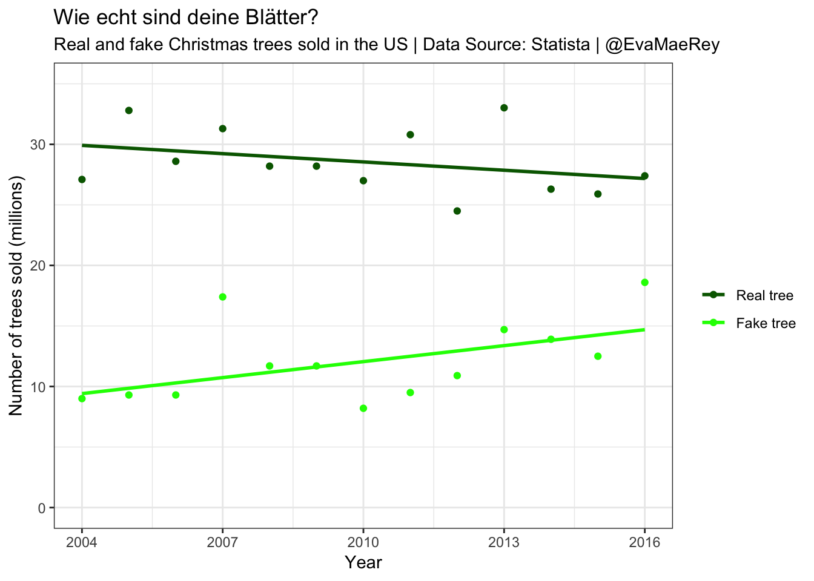
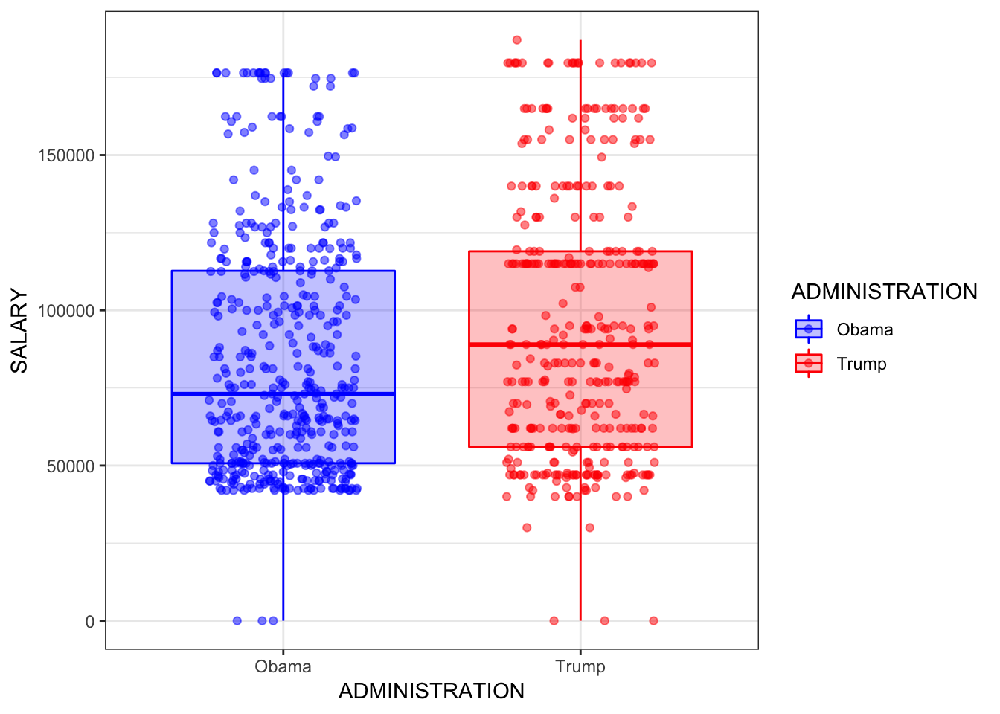

Chapter 6 Salarys Trump and Obama
Today, we will use Markdown to develop a report on salaries of Trump and Obama employees.
6.1 First read in the data
library(readxl)
library(tidyverse)
Trump_White_House_salaries <- read_excel("raw_data/White House salaries.xlsx")
Obama_White_House_salaries <- read_excel("raw_data/White House salaries.xlsx",
sheet = "Obama admin")
both_data = bind_rows(Trump_White_House_salaries, Obama_White_House_salaries)6.1.1 Including Plots
You can also embed plots, for example:
g <- ggplot(both_data, aes(x = SALARY)) +
geom_histogram() + facet_wrap(~ADMINISTRATION)
g## `stat_bin()` using `bins = 30`. Pick better value with `binwidth`.
both_data <- both_data %>% mutate(position_and_name = paste(NAME, `POSITION TITLE`, sep = "\n"))
g <- ggplot(both_data, aes(x = ADMINISTRATION, y = SALARY, col = ADMINISTRATION, fill = ADMINISTRATION)) +
geom_boxplot(alpha = .25) + geom_jitter(aes(text = position_and_name), alpha = .5, height = 0, width = .25) +
scale_colour_manual(values = c("blue", "red")) +
scale_fill_manual(values = c("blue", "red")) +
theme_bw()## Warning: Ignoring unknown aesthetics: textg